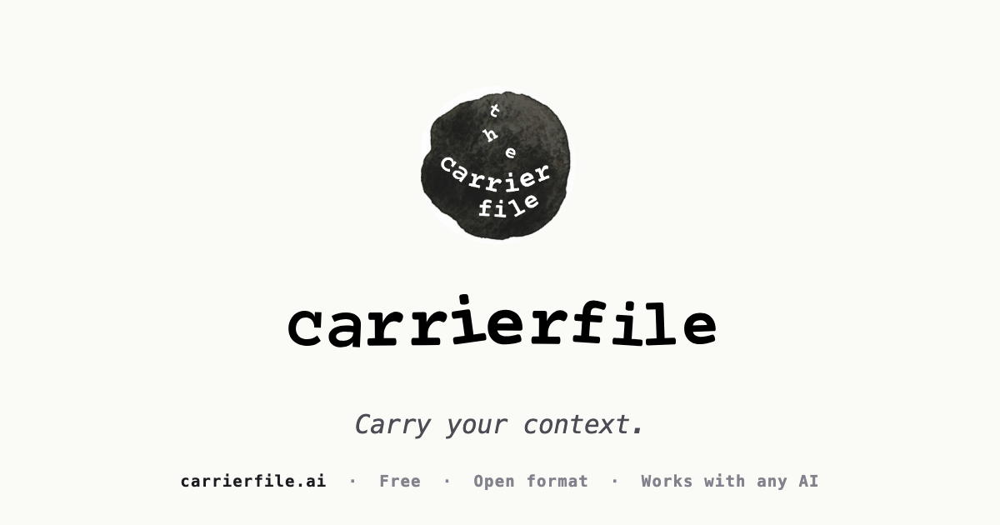
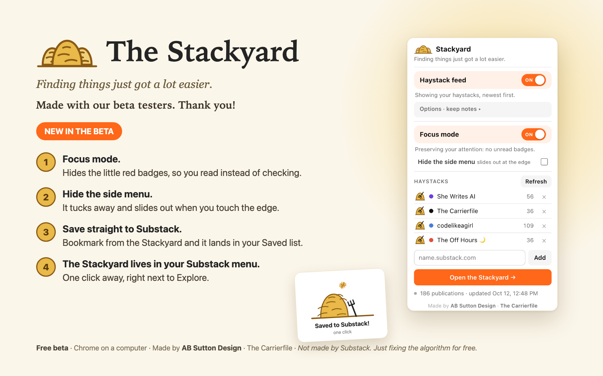

Small, humane tools I've made for working with AI and reading the internet on my own terms.

Free
Carrierfile
Raise your AI right. One plain-text file that teaches any AI who you are, how you work, and how to behave. No account needed.
Build yours at carrierfile.ai

Free beta
The Stackyard
A Chrome extension for reading Substack by recommendation instead of by algorithm, with a Focus mode that hides the red badges.
See the Stackyard